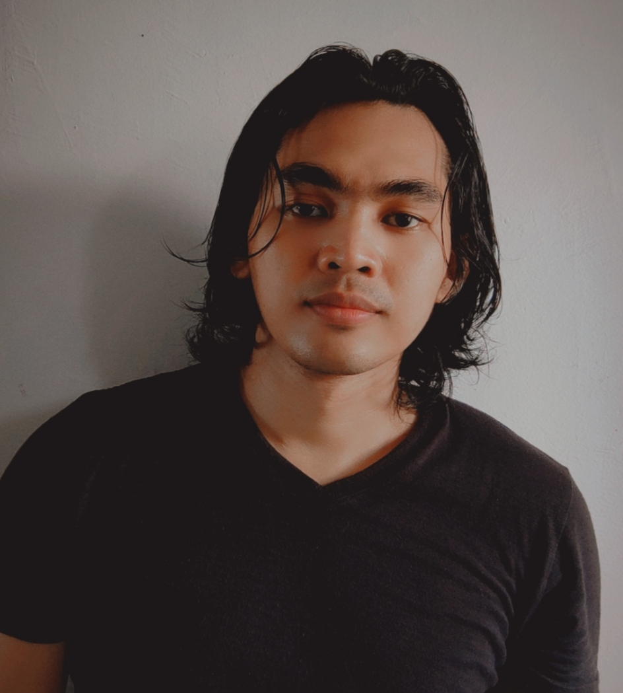
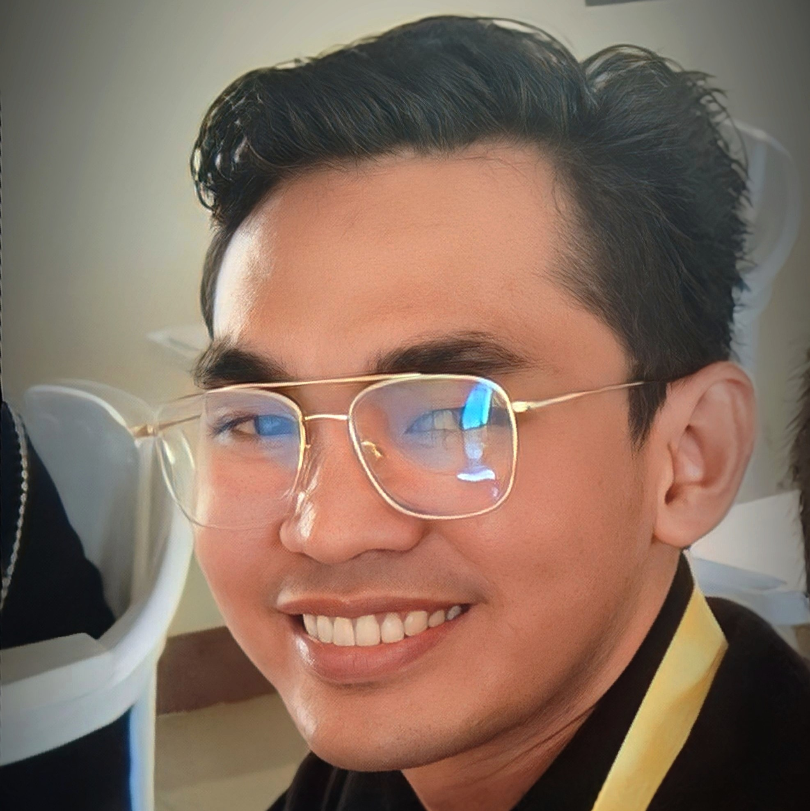

HI THERE!
I'M LEONIDES LOPEZ
I'm a Filipino Self-Taught Visual Artist. I'm very passionate in making Religious Paintings and Portrait Paintings. I am also a student from Lapu-Lapu City College, studying in Bachelor of Science and Industrial Technology - Major in Computer Technology.
About Me
Welcome to My Website! My name is Leonides Lopez, and I am a student studying in Computer Technology and a Self-Taught Visual Artist . As a student, I have been studying Computer Technology for 2 years. During this time, I have gained experience in various programming languages and tools, such as C++, C#, and HTML5. I am particularly interested in C# and C++ Programming Language, and I am always eager to learn more about this field. In addition to my studies in Computer Technology, I am also a Self-Taught Visual Artist. I have been practicing art for 5 years, and I enjoy working with Oil Paintings. My passion for art has led me to support my needs for my studies today. I joined exhibitions and sell my work to collectors around Cebu. One of my favorite piece that I made was the Portrait of Saint John Bosco, where I was able to meticulously expressed my skills as a Visual Artist. This experience taught me valuable lessons about being patient and perseverance. As a student and artist, I value learning various of things, and I believe that these values have helped me to succeed in both areas. In terms of my education, I am currently pursuing my degree in Computer Technology from Lapu-Lapu City College. I am also continuing to learn and grow as an artist by making Portrait Paintings and Religious Paintings, and I am always looking for new opportunities to improve my skills and knowledge in both fields.

Education

LAPU - LAPU CITY COLLEGE - COLLEGE
2023 - PRESENT

ASIAN COLLEGE OF TECHNOLOGY - COLLEGE
2018-2020